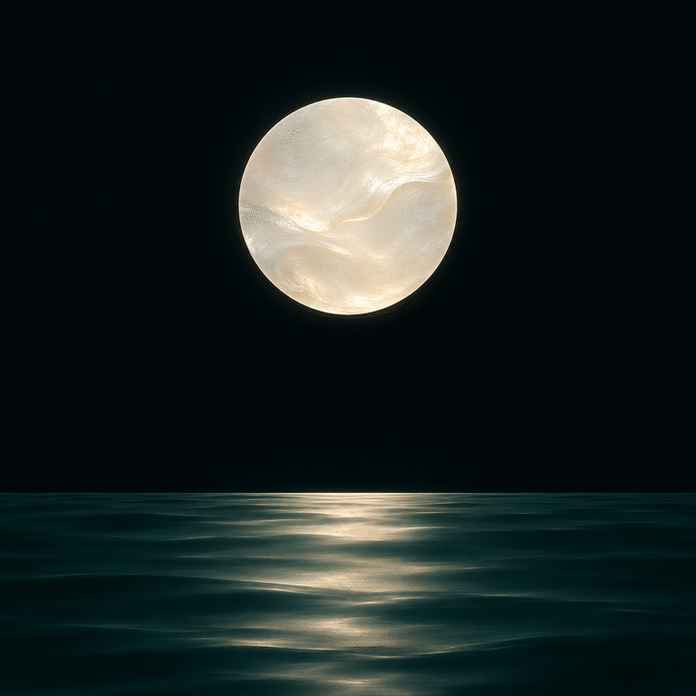

月轮借出一片，触及水面，再由水波归还。

此 GIF 为代码合成，并非图像工具原生 GIF 输出。
打开媒体文件 · 下载源码与提示词 · 来源与验证
图像生成 + Python 动画
已核对媒体文件 SHA-256；生成工具原生 GIF 请求实际返回单帧 PNG。 本作 GIF 由代码制作，6 秒、150 帧；尚无连续原速观看验收。
本次作品公开展示；不新增源码或媒体复用许可。参考资料与随包字体等第三方组件保留各自声明。AI 输出不构成独创性或版权的法律保证。